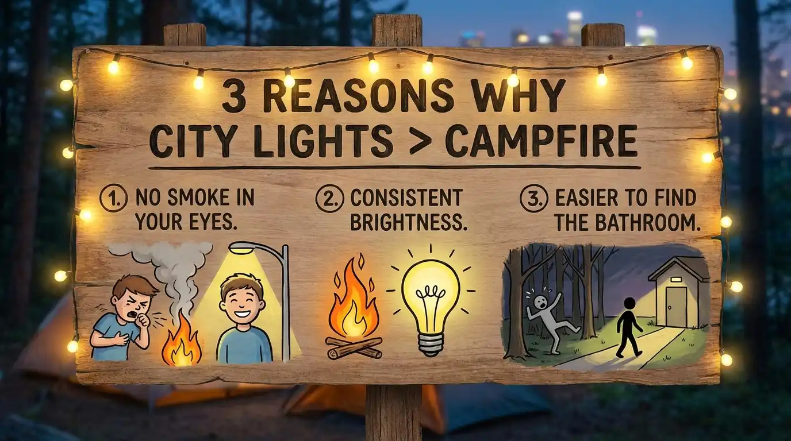

Bosan dengan rutinitas akhir pekan yang itu-itu saja? Merencanakan liburan dengan teman atau keluarga bisa menjadi aktivitas yang menenangkan. Memilih Citylightscamp merupakan salah satu lompatan terbaik yang dapat membawa Anda keluar dari kepenatan zona nyaman kota menuju alam bebas secara instan dan tanpa ribet.
1. Pemandangan Gemerlap Kota yang Tidak Ada Duanya
Hal utama yang menjadi magnet dari Citylightscamp adalah panorama city light atau hamparan gemerlap lampu kota Batu dari ketinggian. Di malam hari, pemandangan ini tampak seperti rasi bintang yang turun ke bumi. Momen ini menjadi lebih istimewa ketika Anda menikmatinya seraya menyesap minuman hangat di depan tenda bersama orang-orang terkasih.
2. Fasilitas Tenda Premium dan Sanitasi Bersih
Kami memahami bahwa kenyamanan adalah fondasi liburan yang sukses. Dibandingkan merogoh kocek dalam untuk membeli perlengkapan kemah yang belum tentu sering dipakai, Citylightscamp menyediakan semuanya: tenda kuat tahan badai, matras, alas, bantal, hingga perlengkapan pendukung. Tentu saja, akses ke toilet bersih selalu siap sedia selama 24 jam untuk melayani para tamu.
Ketika koneksi dengan alam bersatu dengan kenyamanan fasilitas modern yang memadai, disitulah terletak liburan camping yang sesungguhnya.
3. Akses Lokasi Strategis di Pusat Wisata Batu Malang
Berbeda dengan beberapa lokasi berkemah di luar sana yang medannya terjal, akses jalan menuju Citylightscamp cukup bersahabat dan dekat dari pusat keramaian objek wisata Kota Batu. Ini menghemat energi dan waktu perjalanan Anda. Saat siang hari, Anda bisa menyempatkan untuk menjelajahi atraksi wisata dan surga kuliner sebelum akhirnya memungkas hari di tengah kedamaian perbukitan.

4. FAQ Citylightscamp
Apakah harus mendaki gunung jauh untuk sampai ke titik kemah?
Tidak perlu! Fasilitas kami dapat dengan mudah dicapai dengan berjalan kaki santai dari titik penjemputan atau area parkir utama, tak perlu aktivitas trekking berlebihan.
Bagaimana cara memastikan agar tidak kehabisan kuota tenda di Citylightscamp?
Lakukan reservasi Anda maksimal satu hingga dua bulan sebelum hari H (terutama ketika Anda menargetkan hari libur nasional atau akhir pekan). Pemesanan sangat fleksibel dengan menghubungi tim kami via WhatsApp.